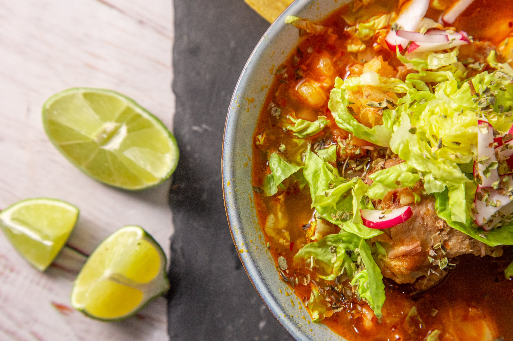

Pozole Rojo(Mexican Pork and Hominy Stew)

Description
This traditional mexican dish is a must have for soup and stew lovers.
Pozole is a hearty Hominy pork stew made year round in mexican restaurants,however
following this easy step-by-step guide, you too can make this delicious meal anytime.
Ingredients
- 1 pound boneless pork shoulder, cubed
- 1 pound boneless pork loin, cubed
- 1/2 pound pork neck bones
- water to cover
- 1 head garlic, cloves peeled
- salt to taste
- 1 large plum tomato
- 4 ounces dried guajillo chiles, stemmed and seeded
- 1 clove garlic
- 1/4 teaspoon dried oregano
- 1 pinch ground cumin
- 2 cups water
- 2 (16 ounce) cans white hominy, drained
Steps
- Place pork shoulder, pork loin, and pork neck bones in a large pot; cover with water.
Add 1 head of garlic and salt to taste.
Bring to a boil, reduce heat and simmer until meat is tender and cooked through, about 1 hour.
Stir in hominy; bring to a boil and simmer for 20 minutes.
- Meanwhile, place tomato and guajillo chiles in a pot and add enough water to cover; bring to a boil.
Cook until chiles have softened, about 15 minutes; drain.
- Place tomato and chiles with salt, 1 clove garlic, oregano, and cumin in a blender; add 2 cups water.
Blend until smooth. Strain mixture through a fine-mesh sieve and set chile sauce aside.
- Transfer pork to a work surface and shred with 2 forks. Discard the pork bones and garlic.
- Stir chile sauce and shredded pork into the pot.
Simmer pozole until flavors have blended, about 5 minutes.
- Ladle pozole into serving bowls and top with shredded cabbage and onion; serve lime wedge on the side.
NOTE:
This dish requires different cuts of pork: shoulder, loin, and leg.
It's important to have both lean and fatty cuts.
Return to Main Page
Return to top